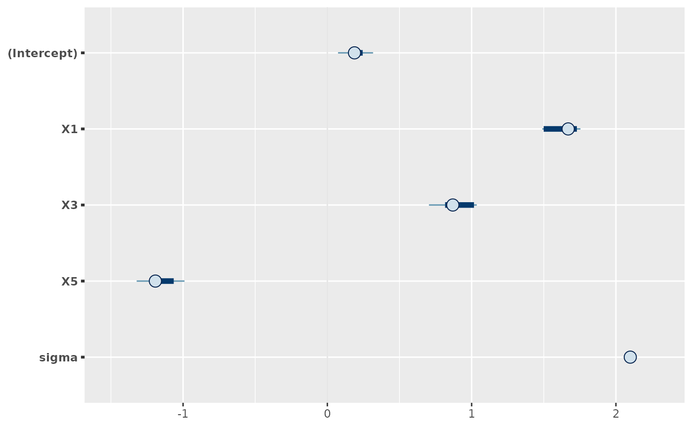

Extract projected parameter draws and coerce to draws_matrix (see package posterior)
Source: R/methods.R
as_draws_matrix.projection.RdThese are the posterior::as_draws() and posterior::as_draws_matrix()
methods for projection objects (returned by project(), possibly as
elements of a list). They extract the projected parameter draws and return
them as a draws_matrix. In case of different (i.e., nonconstant) weights
for the projected draws, a draws_matrix allows for a safer handling of
these weights (safer in contrast to the matrix returned by
as.matrix.projection()), in particular by providing the natural input for
posterior::resample_draws() (see section "Examples" below).
Usage
# S3 method for class 'projection'
as_draws_matrix(x, ...)
# S3 method for class 'projection'
as_draws(x, ...)Arguments
- x
An object of class
projection(returned byproject(), possibly as elements of alist).- ...
Arguments passed to
as.matrix.projection(), except forallow_nonconst_wdraws_prj.
Value
An \(S_{\mathrm{prj}} \times Q\) draws_matrix (see
posterior::draws_matrix()) of projected draws, with
\(S_{\mathrm{prj}}\) denoting the number of projected draws and
\(Q\) the number of parameters. If the projected draws have nonconstant
weights, posterior::weight_draws() is applied internally.
Details
In case of the augmented-data projection for a multilevel submodel
of a brms::categorical() reference model, the multilevel parameters (and
therefore also their names) slightly differ from those in the brms
reference model fit (see section "Augmented-data projection" in
extend_family()'s documentation).
Examples
# Data:
dat_gauss <- data.frame(y = df_gaussian$y, df_gaussian$x)
# The `stanreg` fit which will be used as the reference model (with small
# values for `chains` and `iter`, but only for technical reasons in this
# example; this is not recommended in general):
fit <- rstanarm::stan_glm(
y ~ X1 + X2 + X3 + X4 + X5, family = gaussian(), data = dat_gauss,
QR = TRUE, chains = 2, iter = 500, refresh = 0, seed = 9876
)
# Projection onto an arbitrary combination of predictor terms (with a small
# value for `nclusters`, but only for illustrative purposes; this is not
# recommended in general):
prj <- project(fit, predictor_terms = c("X1", "X3", "X5"), nclusters = 5,
seed = 9182)
# Applying the posterior::as_draws_matrix() generic to the output of
# project() dispatches to the projpred::as_draws_matrix.projection()
# method:
prj_draws <- posterior::as_draws_matrix(prj)
# Resample the projected draws according to their weights:
set.seed(3456)
prj_draws_resampled <- posterior::resample_draws(prj_draws, ndraws = 1000)
# The values from the following two objects should be the same (in general,
# this only holds approximately):
print(proportions(table(rownames(prj_draws_resampled))))
#>
#> 1 2 3 4 5
#> 0.226 0.214 0.186 0.212 0.162
print(weights(prj_draws))
#> [1] 0.226 0.214 0.186 0.212 0.162
# Treat the resampled draws like ordinary draws, e.g., summarize them:
print(posterior::summarize_draws(
prj_draws_resampled,
"median", "mad", function(x) quantile(x, probs = c(0.025, 0.975))
))
#> # A tibble: 5 × 5
#> variable median mad `2.5%` `97.5%`
#> <chr> <dbl> <dbl> <dbl> <dbl>
#> 1 (Intercept) 0.188 0.0841 0.0742 0.317
#> 2 X1 1.67 0.126 1.49 1.75
#> 3 X3 0.869 0.218 0.704 1.04
#> 4 X5 -1.19 0.189 -1.32 -0.990
#> 5 sigma 2.10 0.0185 2.09 2.12
# Or visualize them using the `bayesplot` package:
if (requireNamespace("bayesplot", quietly = TRUE)) {
print(bayesplot::mcmc_intervals(prj_draws_resampled))
}
